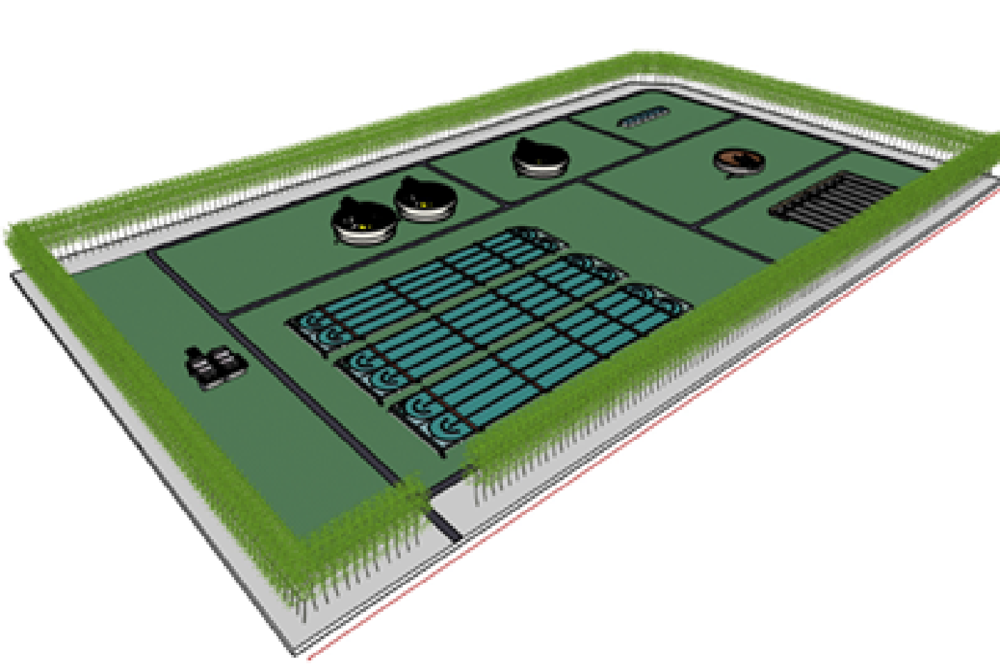

Folleto técnico de la PLAN.T.A.R. Río Gallegos
Agua limpia, futuro seguro.

Introducción y objetivo general
El objetivo principal del proyecto es la realización de una Planta de Tratamiento de Líquidos Cloacales para la ciudad de Río Gallegos, provincia de Santa Cruz, diseñada para alcanzar la capacidad de 200 000 habitantes en un horizonte de diseño de más de 20 años. Esta infraestructura busca brindar cobertura integral y asegurar la depuración de los líquidos, evitando la contaminación de cuerpos receptores y cumpliendo con las exigencias normativas.
Una infraestructura esencial para salud pública y ambiente, con diseño robusto para clima frío y operación por gravedad.
Este proyecto establece los criterios generales de diseño, normativas de referencia, definiciones sanitarias y bibliografía técnica que rigen el desarrollo de todas las memorias descriptivas y de cálculo.
Proyecto electromecánico
El proyecto se enfoca en el cálculo y dimensionamiento electromecánico del sistema. El alcance incluye el circuito de tratamiento desde la cámara de rejas hasta la descarga del efluente tratado en la ría, y el tratamiento de lodos desde su extracción hasta su preparación para disposición final.
- Línea Líquida: Pretratamiento (rejas finas y desarenadores), reactor biológico, sedimentación secundaria y desinfección.
- Línea de Lodos: Espesamiento por gravedad y secado en lechos convencionales.
Quedan excluidos: obra eléctrica y civil detallada, colector principal de la red cloacal urbana, traslado/disposición externa de lodos, y el estudio definitivo de impacto ambiental.
Robustez, simplicidad y gravedad
El diseño privilegia la operación por gravedad desde el ingreso hasta la descarga final, evitando estaciones de bombeo dentro del proceso y sistemas mecanizados o automatizados complejos (recirculación de fangos, digestión de lodos), maximizando simplicidad operativa, confiabilidad y adecuación a clima frío.
Ubicación y justificación del emplazamiento
La planta se emplazará en el predio del actual vaciadero municipal de Río Gallegos, ubicado aproximadamente a 200 m al oeste de la planta de tamices existente. El predio total tiene una superficie de 13 ha.
- Aprovechamiento territorial: sitio ya impactado y degradado; se evita ocupar áreas vírgenes o sensibles.
- Topografía: pendiente favorable para escurrimiento por gravedad, reduciendo bombeo.
- Disposición de lodos: la localización sobre el vaciadero habilita sectores para disposición final controlada de barros tratados.
Marco de referencia
| Eje | Referencia | Aplicación |
|---|---|---|
| Norma principal (técnica) | ex ENOHSA – Tomos I y II | Criterios de estudio y diseño por unidad |
| Normas específicas | IRAM · ISO · Metcalf & Eddy | Materiales, calidad de agua, seguridad eléctrica, buenas prácticas |
| Ambientales y sanitarias (Santa Cruz) | Ley Prov. 2658 · Dec. 007/06 | Uso del recurso hídrico y exigencias de vertido |
| Residuos | Ley Nac. 24.051 | Gestión de residuos peligrosos (si aplica a lodos) |
Parámetros de diseño
Proyección poblacional: población de diseño 200 000 hab al año horizonte 2042 (20 años). Proyecciones geométrica/lineal estiman 172 591–184 684 hab. Se adopta 200 000 como margen de seguridad, extendiendo vida útil efectiva a 25–30 años.
| Parámetro | Valor | Nota |
|---|---|---|
| TCAM | 1,81 % anual | Base INDEC |
| Dotación Agua Potable | 250 L/hab·día | Guía ex ENHOSA |
| Coeficiente de retorno | 0,80 | — |
| Aporte cloacal efectivo | 200 L/hab·día | Clima frío |
Caudales de diseño: calculados para Año 0, 10 y 20; los máximos del Año 20 determinan el dimensionamiento hidráulico. Carga orgánica: afluente predominantemente domiciliario.
Línea líquida
Pretratamiento
El efluente llega impulsado por estaciones previas; en planta no se requieren rejas gruesas ni estación de bombeo cruda.
Rejas finas
Tres (3) unidades en paralelo (una by-pass), limpieza manual, separación 12 mm.
Desarenador – desengrasador
Dos (2) unidades combinadas en paralelo, remueven arenas 0,20 mm. Manejo manual o bombas de arena; sin concentración avanzada ni digestión de grasas.
| Variable | Valor adoptado |
|---|---|
| Canal | Rectangular 2,32 m × 16,22 m |
| Tirante | 1,10 m |
| Velocidad | 0,31 m/s |
Tratamiento biológico – zanja de oxidación
Sistema de aireación prolongada con seis (6) módulos independientes en paralelo.
| Parámetro | Valor |
|---|---|
| Dimensiones por canal | 290,48 m × 7,00 m × 4,00 m |
| Tiempo de retención | 24 h |
| Aireación | Nueve (9) rotores horizontales |
Sedimentación secundaria
Tres (3) unidades circulares tipo Dortmund en paralelo; separación de sólidos biológicos con retorno de lodos.
| Ítem | Especificación |
|---|---|
| Diámetro por unidad | 36 m |
| Extracción | Por gravedad desde tolva central |
| Barredor | De fondo, tipo espiral |
Desinfección final
| Variable | Valor |
|---|---|
| Unidad | Cámara de contacto |
| Recorrido hidráulico | 540 m |
| Geometría | 45 m × 8 m |
| Agente | Hipoclorito de sodio 10 % |
| Dosis | 5 mg/L (cloro activo) |
| Volumen diario | 2 440 L/día |
| Reserva | 8 tanques × 10 m³ (≈30 días) |
Diseño del tratamiento de lodos
Se evita la digestión anaeróbica por complejidad y costos en clima frío. Los lodos estabilizados serán aptos para relleno sanitario o compostaje.
| Etapa | Configuración | Parámetros |
|---|---|---|
| Generación | Lodo secundario | 273,28 m³/día; producción específica 70 kg/hab·día |
| Espesamiento | 1 espesador por gravedad | Diámetro 7 m |
| Secado | 9 lechos en paralelo | 10 m × 40 m (c/u); total 3 600 m²; capa 0,25 m |
Operación y organización
Ente operador y marco institucional
La operación y el mantenimiento podrán estar a cargo de SPSE. Alternativamente, una cooperativa de servicios es una opción sólida por alineación de intereses con usuarios, transparencia y reinversión local de excedentes en mantenimiento, reposiciones y ampliaciones.
La cooperativa puede estructurar manuales de organización, procesos y calidad, con indicadores de nivel de servicio, estandarización del trabajo, formación y mejora continua; fortalece cultura de seguridad e higiene y soporta mantenimiento planificado y atención al usuario.
Estructura organizacional y áreas
| Área | Función principal |
|---|---|
| Planta de Tratamiento | Operación de rejas, zanjas, sedimentadores y lodos |
| Mantenimiento Electromecánico | Conservación y mantenimiento preventivo de equipos |
| Calidad y Laboratorio | Control analítico (DBO₅, SST, coliformes) y sistema de calidad |
| Administración | Gestión documental, inventarios y soporte |
| Oficina Técnica | Documentación, inspección técnica y control de obras |
Personal: 19 personas totales para operación, mantenimiento, calidad y gestión. Cobertura 24/7 con turnos rotativos.
Sistema de gestión y procesos
Se adopta un Sistema de Gestión Integrado apoyado en ISO 9001 e ISO 14001, con política de continuidad, eficiencia, sostenibilidad, cumplimiento normativo, mejora continua, prevención ambiental y capacitación.
Manual de procesos operativos
| Unidad de proceso | Tarea de control clave | Frecuencia |
|---|---|---|
| Rejas finas | Lectura de pérdida de carga | Cada 2 horas |
| Zanja de oxidación | OD y velocidad de rotores | ≥ 3 veces/día |
| Sedimentadores | Espesor de manta de lodos | Diaria |
| Desinfección | Cloro residual y dosis aplicada | Cada turno y diaria |
Control de laboratorio
Parámetros de rutina: DBO₅, SST, sólidos sedimentables, OD, cloro residual y coliformes. Registros normalizados integrados con operación (caudales, purgas) para trazabilidad y auditorías.
Mantenimiento preventivo
Rutinas programadas diarias, semanales, mensuales y anuales: inspección, ajuste, lubricación y verificación; foco en rotores, rasquetas y estructuras.
Análisis económico y financiero
Marco financiero y horizonte
| Variable | Valor | Base |
|---|---|---|
| Moneda / precios | USD | 09/2025 (real) |
| Horizonte | 20 años | — |
| Tasa de descuento (real) | 8,0 % anual | Proy. saneamiento |
Costos de operación (OPEX)
OPEX total anual: 3 026 108 USD.
Evaluación económica clave
| Indicador | Valor | Descripción |
|---|---|---|
| LCC | 31 276 301,84 USD | Ciclo de vida (presente), 20 años |
| CAE | 4 300 050,99 USD/año | Pago anual uniforme (real) |
Sensibilidad e impacto tarifario
Energía aporta 49,11 % e Insumos 32,37 % del OPEX; en conjunto 81,49 %. Un ±20 % en energía implica ±297 241,52 USD/año en el CAE. Los costos por usuario disminuyen hacia Año 20 al amortizarse costos fijos sobre una base mayor.
Equilibrio financiero
En Año 0, el costo unitario por usuario 10,21 USD/mes (escenario Base) presenta déficit vs. tarifa vigente. Se prevén subsidios transitorios o ajustes durante los primeros años. El sistema alcanza equilibrio y sustentabilidad a partir de Año 10.
Ambiente y comunicación
Consideraciones ambientales
Localización en predio de vaciadero para reconvertir un área degradada. Se realizará la EsIA completa conforme Ley Provincial 2658.
Matriz ambiental primigenia
- Agua superficial: posible alteración físico-química por vuelco del efluente tratado (Directo, Moderado, Permanente).
- Percepción social: olores en zonas de secado (Indirecto, Moderado, Temporal).
- Residuos sólidos: disposición segura de arenas, grasas y barros (Directo, Moderado, Permanente).
Plan de marketing y comunicación
Posicionamiento como “polo de saneamiento y recuperación ambiental”.
- Portal Público: indicadores (DBO₅, coliformes), avances, reclamos con trazabilidad.
- Portal Interno: reportes diarios, mantenimiento preventivo, control de insumos.
- Comunidad: visitas guiadas, sensibilización; crisis: protocolos y voceros.
Bibliografía técnica
- ENOHSA. Normas de estudio, criterios de diseño y presentación de proyectos de desagües cloacales. Tomos I y II.
- Metcalf & Eddy (2014). Wastewater Engineering: Treatment and Resource Recovery. McGraw-Hill.
- Ley Prov. 2658 (Santa Cruz) y Decreto 007/06 · Ley Nac. 24.051.